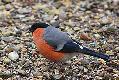
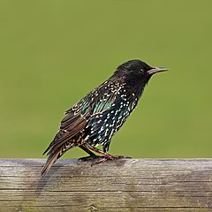

Gatunek średniej wielkości ptaka z rodziny drozdowatych, zamieszkującego Eurazję.
Wierzch ciała brązowy o ciepłym odcieniu, kuper i pokrywy nadogonowe oliwkowe, ogon i wierzch głowy
pomarańczowobrązowe. Spód ciała kremowy z gęstymi brązowymi plamkami.
Do jego charakterystycznej piosenki, w której powtarza muzyczne frazy,
często odnoszono się w poezji.
Śpiewak na drzewie
Gil
Gatunek małego ptaka z rodziny łuszczakowatych, zamieszkujący Eurazję. Nie jest zagrożony

Gil
Jaskółka
Jaskółka dymówka – gatunek niewielkiego ptaka wędrownego
Jaskółka
Szpak
Gatunek średniej wielkości ptaka z rodziny szpakowatych. Częściowo wędrowny.
Pierwotnie zamieszkiwał wyłącznie Eurazję. Nie jest zagrożony wyginięciem.
Jest to gatunek inwazyjny.

Szpak
Wilga
Gatunek średniej wielkości ptaka wędrownego z rodziny wilgowatych, jedyny z tej
rodziny rozmnażający się w północnej strefie umiarkowanej. Nie jest zagrożony wyginięciem